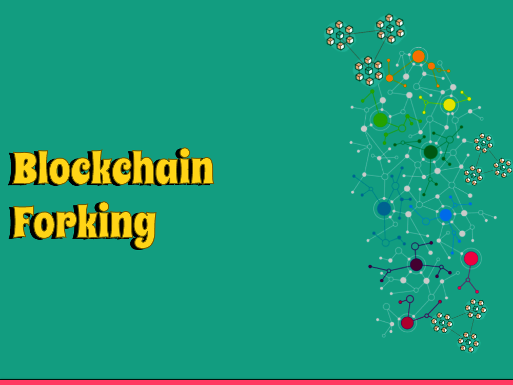

Blockchain forking alludes to the most common way of making another branch in a blockchain network, bringing about a long-lasting or transitory split in the organization. Forking can occur for various reasons, including conflicts inside the organization about how it ought to work, the need to fix a bug or security weakness, or a move up to the organization's capacities.
orking can be a quarrelsome issue inside blockchain networks, as it can prompt a split locally and a deficiency of agreement. Notwithstanding, forking can likewise be a vital and solid interaction for blockchain organizations to develop and adjust to evolving conditions, while as yet keeping up with the center standards of decentralization, straightforwardness, and security that make blockchain innovation so strong.
One of the novel highlights of blockchain innovation is its capacity to empower decentralized, trustless organizations that are impervious to oversight and control. Be that as it may, when conflicts emerge inside a blockchain local area about how the organization ought to work, a fork might happen, bringing about a split in the blockchain.
In straightforward terms, a blockchain fork is an adjustment of the convention of the organization that isn't in reverse viable with the current convention. This can occur for different reasons, for example, a conflict over the guidelines administering the organization, a need to fix a bug or security weakness, or a move up to the organization's capacities.
What is Fork?
With regards to blockchain innovation, a fork alludes to the most common way of making another branch in the blockchain network, bringing about a long-lasting or transitory split in the organization. Blockchain forks can occur for various reasons, including conflicts inside the organization about how it ought to work, the need to fix a bug or security weakness, or a move up to the organization's capacities.
There are two primary sorts of blockchain forks: hard forks and delicate forks.
1: Hard Forks
A hard fork is a long-lasting disparity from the past form of the blockchain, bringing about the making of a new and separate organization. This happens when a gathering of hubs inside the organization choose to execute a change to the convention that isn't viable with the current convention.
In a hard fork, all hubs on the organization should move up to the new convention to keep taking part in the organization. In the event that they don't, they will be working on the old organization and can not approve exchanges on the new organization.
2: Delicate Forks
A delicate fork, then again, is an impermanent disparity from the past rendition of the blockchain, and is in reverse viable with the current convention. In a delicate fork, the new convention is more prohibitive than the old convention, and all hubs on the organization are as yet ready to approve exchanges on the new organization.
Delicate forks are normally used to fix a bug or security weakness in the organization, or to add new elements to the organization that are in reverse viable with the current convention.
Conclusion
Blockchain forking is a significant idea to comprehend in the realm of blockchain innovation. While it might seem like a confounded cycle, it is just a way for blockchain networks to make changes to the convention of the organization in a decentralized and majority rule way.
Whether it's a hard fork or a delicate fork, the method involved with forking empowers blockchain organizations to develop and adjust to evolving conditions, while as yet keeping up with the center standards of decentralization, straightforwardness, and security that make blockchain innovation so strong.